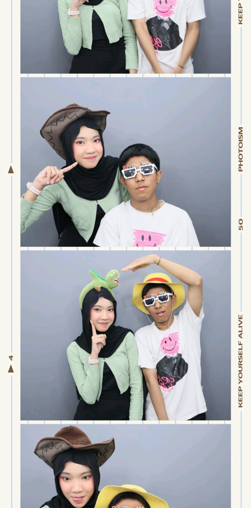
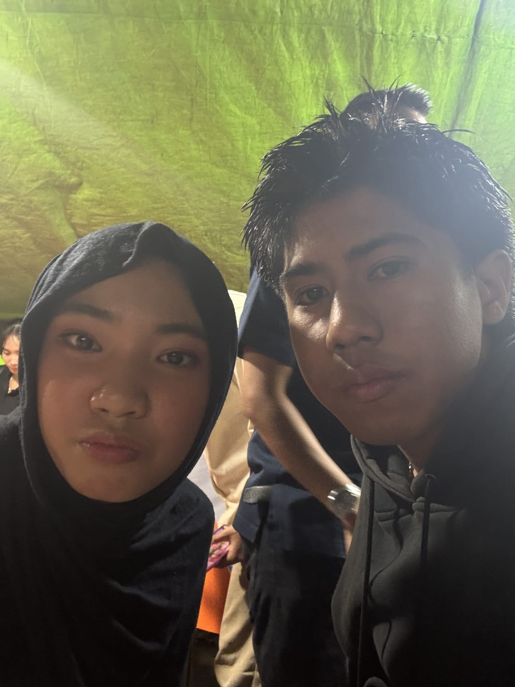
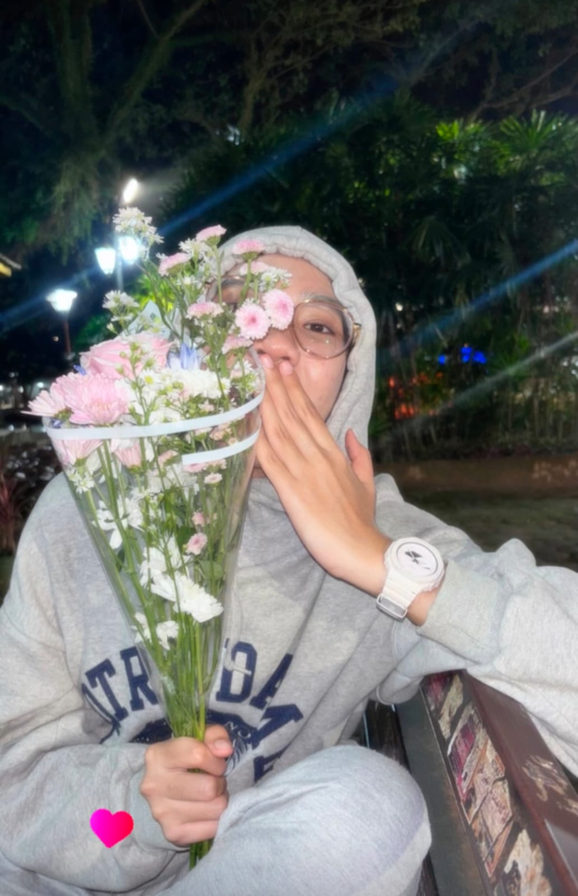

(disini rafly bener bener sayangg samo nayy dan mau samoo nayy nak neyy rafly bakal berusaha dan rafly bener bener jadi pribadi yang lebih baik buat nayy rafly jugo bukan manusio sempurno kadang ado salah yang perlu nayy tau rafly selalu sayangg samo neyy rafly selalu liat neyy ke anak kecill kalau neyy tau yang selalu rafly manjoin rafly bener bener sayangg samo nayy jadi tolong terimo lah diri rafly sekali lagi rafly dak perlu ado label dalam hubungan itu yang perlu tau itu komit kito berduo terserah wong nak bilang apo ke rafly terimo lah dirii rafly sekali lagi. 💔)
Kenangan Kita 📸

(ini photoboth pertamo kito dan date pertamo kali kito disini rafly bener bener pertamo kali kaget ado cewe yang galak ngajak split bill dan mau makan di luar itu cewee yang langka rafly temui disitu rafly bener bener respect nian samo neyy dan pengen buat nayy bahagia.)
(disini nayy waktu di kampus lagi red day 1 dan bener bener merintih kesakitan dan demam jugo rafly disitu bener bener khawatir dengan keadaan nayy yang cak itu dan rafly mikir rafly dak boleh ninggalin nayy di posisi cak itu karno rafly tau nayy dwean dikoss katek someone)
(disni kito abis balek kuliah di kamar adin main main disituu nayy bener bener klingii niann raflyyy kangen nian maso itu)

(ini kito nerabas nak beli pecel lele ujan nyo sii rintik tapi banyak niann sampe kito basahhh kuyupp niann dan untung nyo disanoo dak pulo ramee)

(dan ini momen paling berarti buat raflyy yang bener bener rafly inget saat nembak nayy dan nay bilang raflyy kalau sudahh pacaran samo nayy kagek sayang rafly kurangg dan cak mano kalau nayy idak sesuai expetasii nayy disitu rafly bener bener dengan tegas ngomong rafly bakal tetep teruss sayangg samo nayy dan rafly nerimo segalonyoo tentang nayy dan disitu dari situ lah raflyy bener bener siap untuk segalonyoo buat nayy karno rafly sudahh ado hubungan samoo nayy dan disitu nayy cantik dann lucuu niannn ❤️)